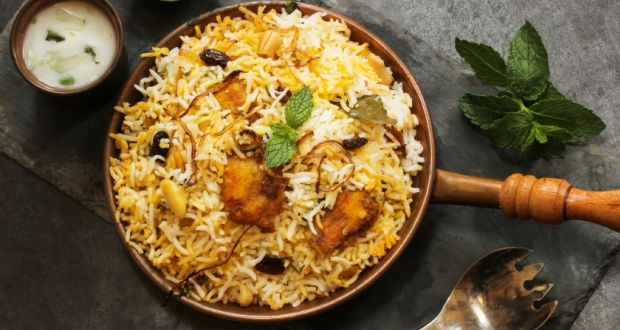

Suruchi Food Gallery
Suruchi
The orignal Taste of Belgaum
Suruchi has wide range of Food dishes that blows your mind.
|  |
Biryani
Our Special Suruchi Biryani is prepared using a traditional family recipe by adding the marinated meat
to the special Basmati rice which is cooked along with the steam. This releases the various flavors and aroma to
the rice making it the aromatic delicacy that is craved by everyone. |
KebabThe minced meat is marinated using our authentic masala and grilled to perfection,
an ultimate treat to your taste buds. |
|
|
| CurriesThe Suruchi curry is prepared using marinated meat and is cooked by adding yogurt,masala and some traditional spices to give a taste to your toungue. |
TandoorOur special meat grills are prepared using less oil and less spices,
thus making it a healthier choice for our patrons. |

|
|
| ShawarmaA shawarma a day keeps problems a day. Special shawarma made with grilled chicken and cream for special people
to make you feel stress free. |
DessertDesserts are the most required dishes after the main course and we are concerned
about that thing.We bring you the finest dessert for you. |
|
|
| JuicesJuices are the mandatory things wether it may be during the food or before and after food.
We provide the freshly prepared fruit juices that quenches your thirst.
|
These are the Quisines in our Resturant.
Thank You!
Enjoy the Taste !
Suruchi,Belgaum